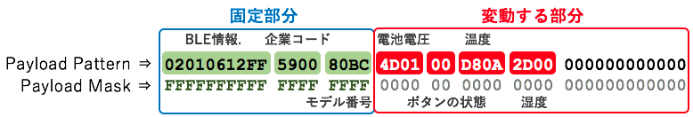
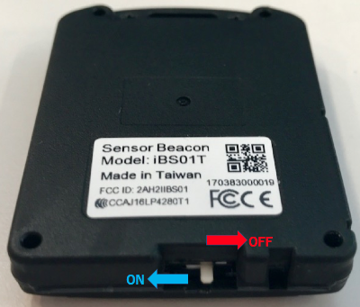

3. BLEゲートウェイの設定¶
レンジャーシステムズ製のBLEゲートウェイの設定を行います。AWS IoTに接続する為の設定の他に、ゲートウェイのWiFi設定やBLE温湿度センサーが送信するBeaconの取得方法などの設定を行います。
3.1. 電源投入¶
レンジャーシステムズ製のBLEゲートウェイは、USBで給電する仕組みになっています。
USBケーブルを本体に接続し、電源供給元(USB電源アダプタ、もしくは、PCのUSBポート)に接続してください。
3.2. BLEゲートウェイを初期化する¶
ゲートウェイの電源が入った状態で、本体裏面にあるリセット用ボタンを5秒以上長押しすると、工場出荷状態に戻すことが出来ます。クリップなどでボタンを押して下さい。

3.3. ゲートウェイにWiFiで接続する¶
BLEゲートウェイの設定を行うために、BLEゲートウェイにWiFi接続します。本ゲートウェイは、工場出荷状態ではWiFiのアクセスポイント(親機)モードになっており、PCから直接WiFiで接続し、Webブラウザから設定を行うことができます。
電源投入後、ゲートウェイの起動が終わると、WiFi接続が可能なPC等のネットワーク画面で「BLE-WIFI_YY_ZZ」というSSIDが表示されます。
ハンズオンで使用するゲートウェイのモデル名は、iGS01です。SSIDは、「BLE-WIFI_YY_ZZ」になります。
ゲートウェイのモデルがiGS02の場合、SSIDは、「IGS02_YY_ZZ」になります。
YY_ZZ は、ゲートウェイの背面に記録されているMACアドレスの下２桁になります。 * モデルがiGS01で、MACアドレスが “B03829159927” の場合、SSIDは、”BLE-WIFI_99_27”になります。

ご自身のゲートウェイのSSIDに接続して下さい。 WiFiのパスワードは、”12345678”です。
ゲートウェイに接続したまま、Webブラウザから IPアドレス「192.168.10.1」にアクセスするとゲートウェイの設定画面 が表示されます。(Webブラウザは、Google Chromeを使用して下さい。)
ユーザー名とパスワードを求めるポップアップが表示されますので、以下を入力し、ログインしてください。
| 項目 | 値 |
|---|---|
| ユーザー名 | admin |
| パスワード | admin |

3.4. AWS IoTへ接続するための設定¶
「Applicatoins」タブをクリックし、ゲートウェイがAWS IoTに接続するための設定を行って下さい。最後に、[Save] ボタンを押して設定を保存します。
Rebootを促すメッセージが出ますが、まだ、Rebootしないで下さい。
| 項目 | 値 |
|---|---|
| Application | MQTT Client |
| Host/IP | 記録しておいたEndpoint情報 |
| Port | 8883 (最初は、1883になっているので8883に書き換えて下さい) |
| Publish Topic | sensor/<参加者番号> |
| Client ID | ranger-gw-<参加者番号> (AWS IoTで作成したデバイス名) |
| Username | 空欄 |
| Password | 空欄 |
| MQTTS | Enable (標準プロトコルのMQTTを指定) |
| Root CA | AWSIoT Root CA |
| Use Certificate | Enable |

Publish Topicとは、AWS IoTに送信(Publish)されるMQTTメッセージのトピック名になります。AWS IoTでは、このトピック名をAWS IoTのルールエンジンが評価し、設定したトピック名のメッセージだけを他のAWSのサービスに渡すことができるようになります。このハンズオンでは、複数の参加者で1つのAWSアカウントを共用する場合を考慮し、トピック名に<参加者番号>を付加して、他のIAMユーザーのゲートウェイが送信してくる計測データと区別できるようにしています。 トピック名は、自由に付ける事が可能で、”/”で階層化できます。
例：
- sensor/01
- sensor/templature/room-1
- switch/door/room-2B
AWS IoTでは、MQTT、HTTP、WebSocketなどの標準的なプロトコルが使用します。このゲートウェイでは、MQTTを使用してAWS IoTと通信します。AWS IoTでは、TLSで暗号化されたMQTT用のポート番号 Port = 8883 を使用します。
3.5. 証明書の登録¶
先の章で、AWS IoTのマネジメントコンソールから証明書を作成しました。このセクションでは、作成した証明書をAWS IoTのデバイスであるBLEゲートウェイにインストールします。この証明書を使用する事で、BLEゲートウェイは、安全にAWS IoTに接続できるようになります。
BLEゲートウェイのWeb画面の「Advanced」タブをクリックしてください。
“Certificate”の横の[ファイルを選択] ボタンを押して、「証明書の作成」のセクションで保存しておいた証明書(Certificate)を選択し、[Upload Certificate] ボタンを押して、証明書をアップロードします。
“Key”の横の[ファイルを選択] ボタンを押して、保存しておいたプライベートキー(Private key)を選択し、[Upload Key] ボタンを押して、プライベートキーをアップロードして下さい。
| 項目 | ファイル |
|---|---|
| Certificate | xxxxxxxxxx-certificate.pem.crt (証明書) |
| Key | xxxxxxxxxx-private.pem.key (プライベートキー) |

正常にアップロードが終わると、下記の様に「—– BEGEIN」で始まる証明書の内容が表示されます。「—– BEGEIN」が表示されない場合、証明書が間違っているか、Webブラウザの互換性の問題が疑われます。問題がある場合は、トレーナーに問い合わせて下さい。
まだ、Rebootしないで下さい。

3.6. BLEフィルター設定¶
レンジャーシステムズのBLEゲートウェイは、受信可能なBeaconを全て受信する仕様になっています。このため、BLEフィルター設定をしていなければ、周囲のBeaconを全て受信し、AWS IoTに送信してしまいます。 今回使用する温湿度センサーが送信するBeaconだけをAWS IoTに送信させるために、 BLEフィルター設定 を行います。
温湿度センサーは、Payload Pattern(02010612FF590080BC4D0100D80A2D00000000000000)の様なBeaconを送信します。冒頭のBLE情報、企業コード、モデル番号は、温湿度センサー固有の情報で、固定値です。 このパターンを持つBeaconだけをAWS IoTに送信させるための設定が、BLEフィルター設定となります。 Beaconの固定部分のPayload Maskのビットをセット(FF)にして、その部分だけを比較するようにします。電池電圧、ボタンの状態、温度、湿度は変動しますので、比較の対象をから外すために、Payload Maskを(00)にします。
Payload Pattern、Payload Mask を入力し、[Save] ボタンを押して設定を保存します。
| 項目 | 値 |
|---|---|
| Payload Pattern | 02010612FF590080BC4D0100D80A2D00000000000000 |
| Payload Mask | FFFFFFFFFFFFFFFFFF00000000000000000000000000 |

まだ、Rebootしないで下さい。
設定画面上部のRSSIは、取得するBLE Beaconの電波強度です。RSSIは、温湿度センサーとBLEゲートウェイの距離が離れれば離れるほど小さな値になります。近くのBeaconだけを受信したい場合は、RSSIの値を適宜調整します。今回は、-100dBmの設定のままにし、変更しません。(-100dBmに設定すると、受信可能なBeaconは、全て受信します。)
3.7. タイムサーバーの設定¶
AWS IoTにデータを送信する際、ゲートウェイは、センサーデータに時刻情報を付加し、AWS IoTに送信します。 BLEゲートウェイには、時計(RTC) が内蔵されていないため、ゲートウェイの電源をOFFにすると時計が1970年に戻ってしまいます。タイムサーバーの設定を行うと、BLEゲートウェイはインターネット上のタイムサーバー(NTPサーバー)と時刻同期し、正確な時刻情報をAWS IoTに送信できるようになります。
BLEゲートウェイのWeb画面の「System」タブをクリックし、”NTP Setting” に下記を設定してください。
| 項目 | 値 |
|---|---|
| Enable NTP | Enable |
| Time Server | pool.ntp.org (自動的に入力されます。) |
| Update Period | 10 mins |
最後に、[Save NTP Setting] ボタンを押して、設定を保存します。
まだ、Rebootしないで下さい。

3.8. WiFi設定¶
これまで、アクセスポイント(親機)モードになっているBLEゲートウェイにWiFi接続し、設定を行ってきました。このままでは、BLEゲートウエイはインターネットに接続出来ません。BLEゲートウェイをStation(子機)モードに設定し、インターネットに接続可能なWiFiアクセスポイントに接続します。
[Wi-Fi] タブをクリックし、Wi-Fi設定画面に移動します。

“Wi-Fi Mode”を”Station”に変更し、[Scan] ボタンを押して下さい。周囲のアクセスポイントを探索します。探索が終了すると、”Done.”と表示されます。”Site survey”から、接続対象のアクセスポイントを選んでください。接続対象のアクセスポイントの情報は、別途、トレーナーから指示があります。

“Security protocol”は、自動的に設定されます。 “Security key”にWiFiのパスワードを入力し、[Save] ボタンを押して設定を保存します。

3.9. 最終確認¶
ゲートウェイの設定を再度確認して下さい。 ゲストWiFiを使用している場合、Reboot後にゲートウェイのIPアドレスを知る事が難しいため、BLEゲートウェイの再設の変更が出来なくなる場合があります。その場合、ゲートウェイを初期化して、最初から設定をやり直す必要がありますので、ご注意下さい。

3.11. センサーの電源を入れる¶
センサーのスライドスイッチをスライドさせて、電源を入れて下さい。
センサーデータ(温度、湿度など)の送信が始まります。
これで、ゲートウェイ・デバイスの設定は、終わりです。BLEゲートウェイがAWS IoTに接続できるようになっているはずです。次のセクションで、AWS IoTにセンサーデータが来ているか確認してみましょう。